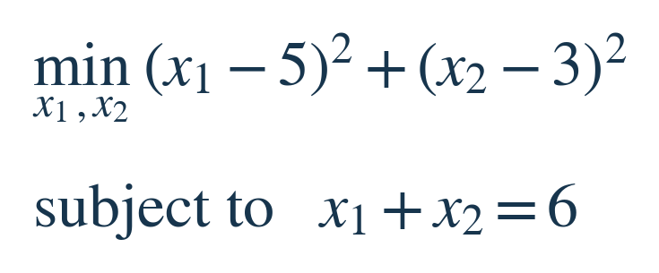
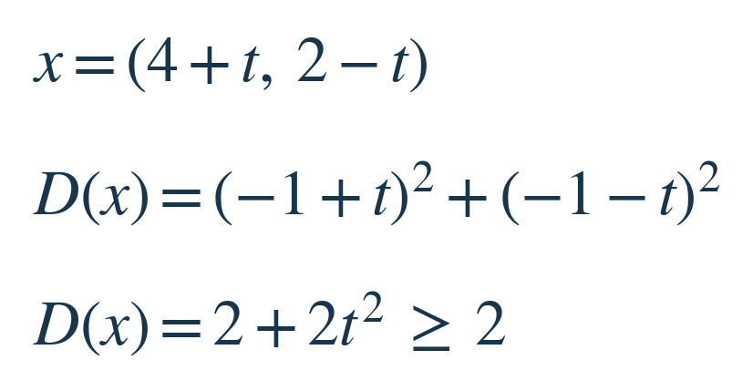
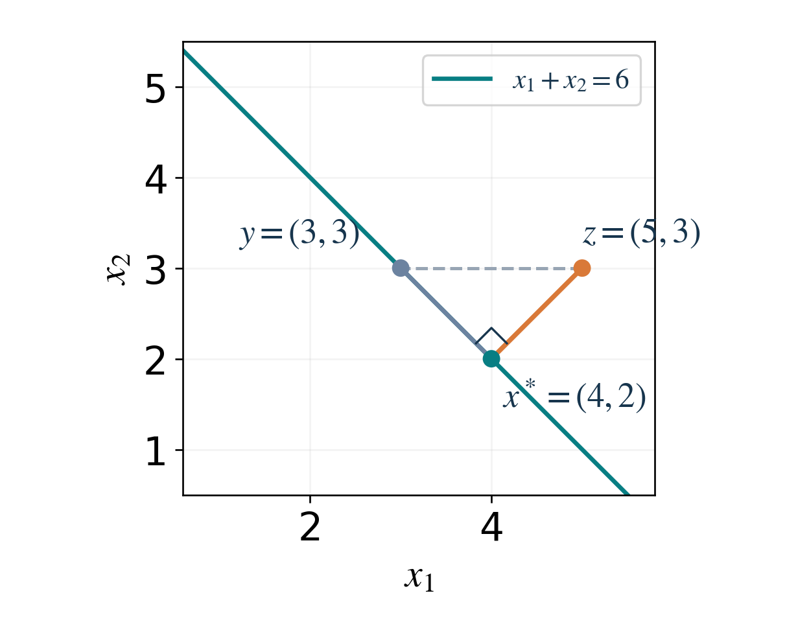
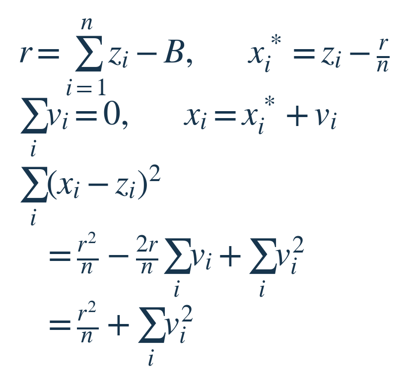
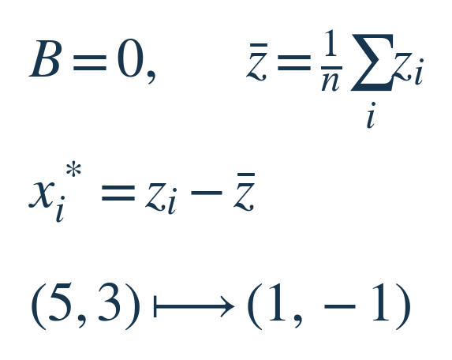
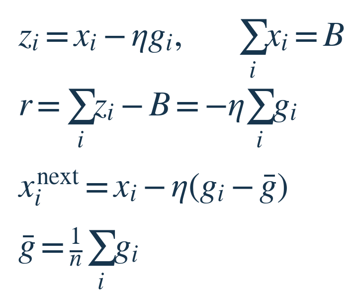
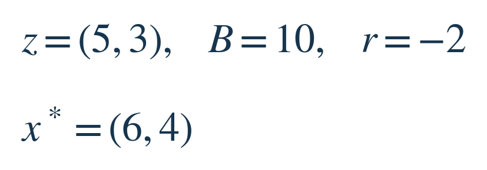

两项预算草案分别是5和3，总额却只核定了6。怎样调整，才能既满足总额，又尽量保留原草案？本期的核心是：先明确怎样衡量“改动小”，再沿着最短方向回到允许的方案上。数字只是教学例子，不是业务数据。
本期新增的是硬约束下的确定性修正。上期研究“信息有限时怎样预测随机结果”；这次草案和总额都已给定，不估计未知均值，也不讨论抽样方差。两课共享“垂直部分的平方可以分开相加”这一依据；新增的是怎样从硬约束构造修正规则，并把它变成保持约束的更新步骤。读完可以自己判断：一次修正保住了什么，又优化了什么。
先决定，“小改动”是什么意思
把预算单位固定，两项草案记为z=(5,3)，调整后的数记为x₁和x₂。它们可以连续变化，必须加起来等于6。我们选择“每项改动的平方相加”作为代价，并且两项权重相同。这是明确的建模选择：大幅改动某一项会受到更重惩罚；它不表示收益最大，也不要求保持原来的比例。


每项都减1，得到(4,2)，总额正好为6，代价为1²+1²=2。按原比例缩成(3.75,2.25)也满足总额，但代价是1.25²+0.75²=2.125。比例缩放回答的是另一个要求，因此不能只凭“总额对了”就说两者等价。
为什么平均减去偏差，确实改得最少？
从(4,2)出发，任何其他总额仍为6的方案，都能写成(4+t,2−t)：第一项多t，第二项就必须少t。t可以为正、为负，也可以为0。这一步没有漏掉允许的方案。把刚才的代价记为D(x)，再代入这个方案：


展开第一项得到1−2t+t²，第二项得到1+2t+t²。两个一次项正好抵消，只剩2+2t²。平方不可能为负，所以t=0时唯一最小。这就证明了(4,2)，不只是在几个候选里挑出来的。


图上横轴、纵轴就是两项预算。青色斜线收集了所有总额为6的方案，橙色线段把草案z连到修正点x*。橙线与约束线垂直；再沿约束线走到y，只会添出一条直角边。刚才代价里的2t²，就是这段额外移动的平方长度。图中的y=(3,3)对应t=−1，距离平方便从2增加到4。把一个点送到允许集合中最近的位置，叫作“投影”；这里使用通常的欧氏距离，所以最近的方向是垂直方向。
从两项推广到n项，关键一步仍是抵消
现在草案有n项，第i项为zᵢ，核定总额为B。令r表示“草案总额减去B”。如果r为正，总量超了；如果为负，还需要补上。候选规则是每项减去r/n，它一定满足总额。星号只表示我们提出的最优候选，不是乘号。


公式中的vᵢ是相对候选的额外改动。所有可行方案必须满足vᵢ之和为0，否则总额又变了。展开平方后，交叉项是−2r/n乘以这个和，因此消失；任何额外改动只会留下非负的平方和。唯一最小值出现在每个vᵢ都为0。由此得到一个可复用规则：在同单位、等权平方改动下，把总量偏差平均分给各项。
同一个操作，怎样用于数据和优化？
一、数据居中。把B设为0，r/n就是草案分量的平均值。于是“每项减去均值”正是把向量投到总和为0的集合。仍用(5,3)，得到(1,−1)：两项的差仍是2，只拿掉它们共同的水平4。这解释了居中保留相对差异的方式；它本身不等于去掉所有噪声。


二、保总量的梯度更新。假设当前x已经满足总额B，想减小一个可微的损失f。gᵢ是f对第i项的偏导，表示这一项小幅增加时，损失局部怎样变化；η为正步长，取合适单位使ηgᵢ与xᵢ相同。普通更新先试着取zᵢ=xᵢ−ηgᵢ，但这一步可能破坏总量。把这个试走结果按同一规则投回去：


第一行是普通梯度步；第二行利用当前总量已是B，把新偏差算出来；最后把偏差平均补回，得到“减去梯度均值后再更新”。所以不是凭经验把梯度居中，而是总量约束推导出了这个操作。
用同一修正点x=(4,2)，若当前梯度g=(3,1)，它的均值为2。投影后的梯度变成(1,−1)，实际更新方向是(−1,1)，更新为(4−η,2+η)，总额始终为6。共同减少两项的那部分被拿掉了，只留下两项之间重新分配的方向。它保证总量不变；损失是否下降还取决于函数性质和步长，不能把可行性当成收敛保证。
使用前检查三个条件
第一，代价确实是同单位、等权的平方改动。若两项改变一单位的代价不同，或要保持比例，就需要换目标，平均修正一般不再最优。第二，本课只加了总和约束，没有保证各项非负；概率或实际预算还需要非负限制，不能算完后随手截成0，因为总额会再次改变。第三，这里是精确的线性约束；对弯曲的非线性约束，只沿局部切线走通常不能保证走完仍可行。
一个小判断，先自己选
草案仍是(5,3)，只把核定总额由6改为10，仍用同一个等权平方代价。应该按比例变成(6.25,3.75)，还是把两项都加1？你只需要说明：哪一项条件改变了，哪一条规则保持不变。答案在下方，静态邮件不会真正锁住它。
想过再看：答案与选读来源
想过再看：答案


只改变了B，衡量改动的方式和总和约束结构不变。现在r=−2，每项减去−1，得到(6,4)。代价为2；比例缩放的代价为2.125。符号变了，最小改动的证明不需要重来。
可选深入：对应的一手教材
本文例子与展开证明为原创教学推导；下面材料用于核对投影几何、最小范数和实际优化形式，不是新算法或实验收益报告。
Boyd 与 Vandenberghe：Introduction to Applied Linear Algebra，§3.3解释居中，§16.1–16.3讨论线性等式约束与最小范数。
Stanford EE263：Lecture 8，第8–4到8–7页把“最小修正”与正交、勾股分解连起来。
Stanford EE364b：Subgradient Methods for Constrained Problems，标号3的幻灯片（PDF第4页）给出一般线性等式约束的投影更新；本课是只有一条总和约束的特例。